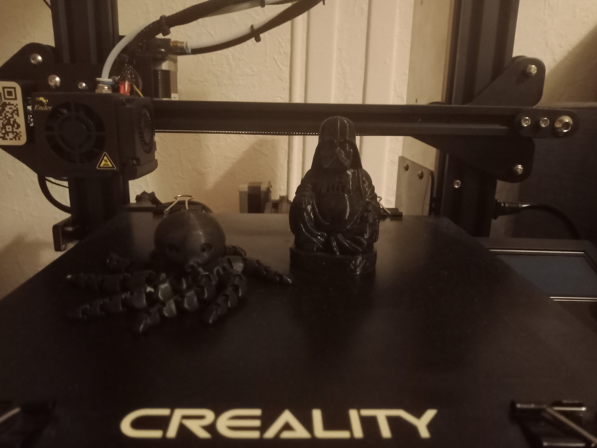

J'ai découvert cette passion quand j'étais aux lycéee dans ma premier années STI2D. Nous avions des cours ITEC (Innovation Technologique et Éco-Conception). Où j'ai découvert la modélisation 3d sur le logiciel solidwork et impresion 3d qui sont devenu une passion pour moi.j'ai débuter grace à cette matière sur des impriment 3d UP-Box qui sont des impriment plutos facil à utiliser. l'itec ma aussi permis de découvrire la gravure laser c'est une partie de ma vie qui ma permis de découvrire beaucoup de matière passionnante. c'est pourquoi j'ai décider de parler de cette passion.

Mon matériel et des impresion réaliser
quelle matériels j'utilise aujourd'hui pour l'impression 3D. J'ai donc un peux investi dans une imprimante 3D dans mon cas une ender 3 pro.C'est une impriment chinoise disponible de 150€ à 200€ avec une surface impresion assez grande et une très bonne qualiter pour le prix mais elle n'est pas aussi simple d'utilisation que la UP box. l'avantager c'est quand 2022 on peux trouver facilement des model 3d sur thingivers par exemple. Vous pouvez voir sur la photo quelle que impresion 3d. j'ai aussi pu imprimer une pièce de l'accoudoir d'une polo qui étais casser.